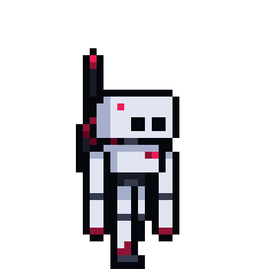
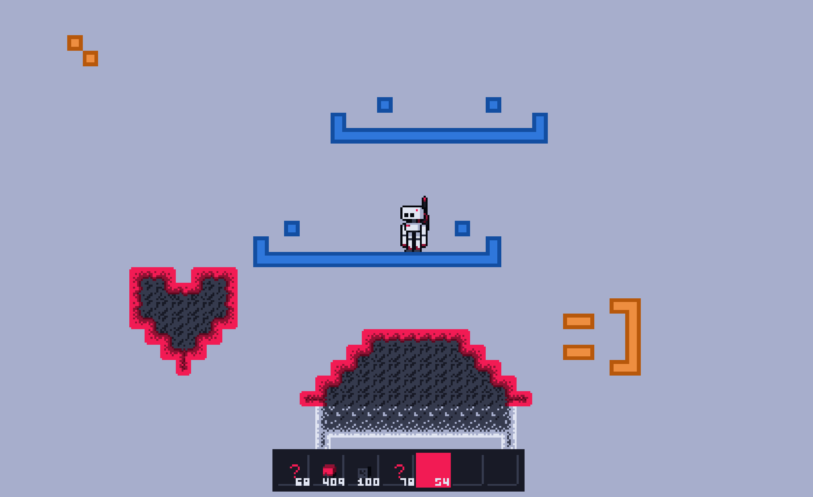
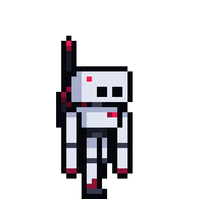
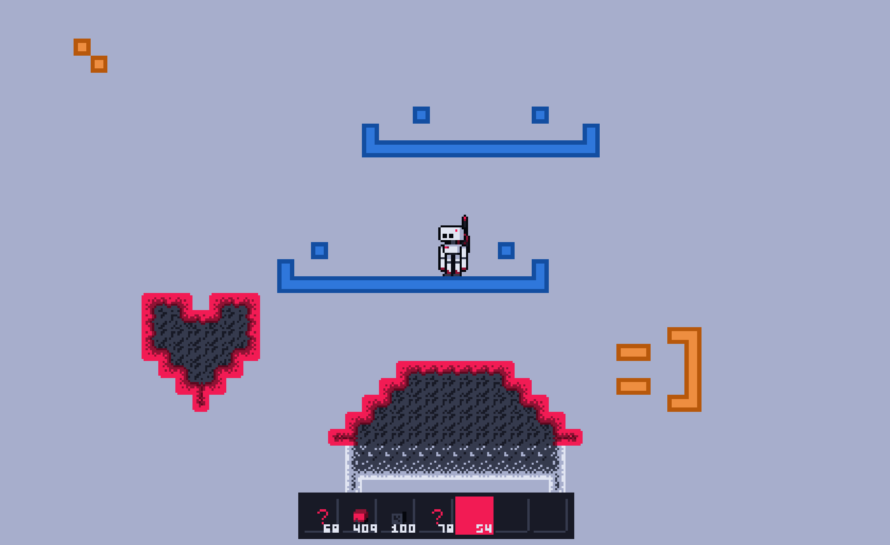

About Me
Hi, I'm Nikki! I'm a second year Game Design and Development major and the Rochester Institute of Technology. I'm a huge coding nerd, and I love all things open source and hackable.
My pronouns are she/they, and my favorite flavor of autism is linux customization/personalization :D (low level programming languages take a close second place)
Projects
Goober Game
A 2D space exploration adventure game.
Goober Game is my biggest passion project. I've been working on it for over a year at this point, and it's making steady progress. "Goober Game" is the working title, I don't have a finalized name yet.
 



- 2D space exploration survival game
- Solo project
- Custom engine made by me
- Homemade and freshly baked pixel art
Learn more here !!
Adumbration
A game project with 3 peers in the course IGME 106 at RIT. You can find more info here !!
Watchfaces
Over the course of high school, I spent a bit of my free time learning the C programming language by coding watchfaces for the Pebble smartwatch platform! The Pebble (now "Rebble") community is an active and tightly-knit collection of passionate people trying to keep the idea of the Pebble platform alive through crowd funding and open source software, several years after the original company went under and was bought by Fitbit. You can find more info here !!